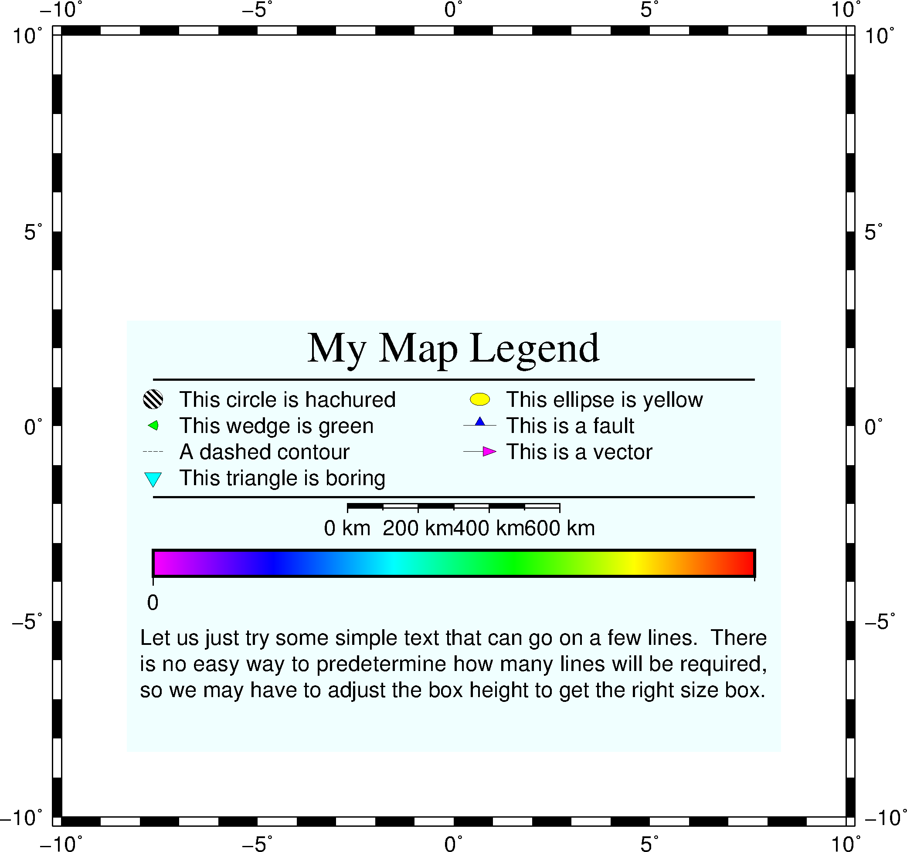
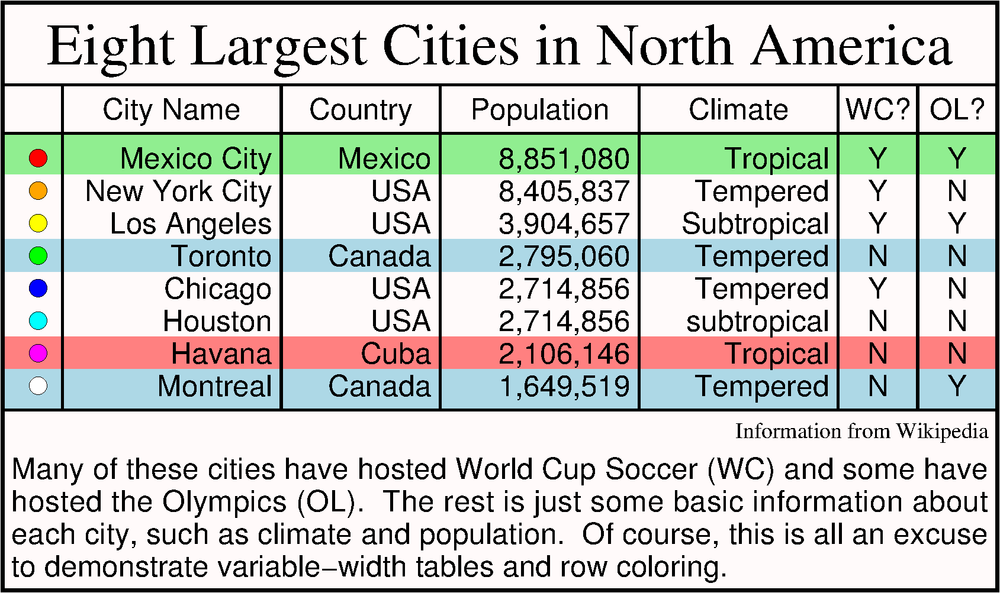

13.46 pslegend¶
| 官方文档: | pslegend |
|---|---|
| 简介: | 在图上添加图例 |
13.46.1 选项¶
-C<dx>/<dy>- 设置图例边框与内部图例之间的空白，默认值为
4p/4p -D[g|j|J|n|x]<refpoint>+w<width>[/<height>][+j<justify>][+l<spacing>][+o<dx>[/<dy>]]设置图例的位置和大小
[g|j|J|n|x]<refpoint>指定底图上的参考点，见 绘制修饰物+w<width>/<height>用于指定图例框的尺寸，若<height>未指定或取0，则GMT会自动估算所需的高度+j<justify>指定图例上的锚点，默认锚点是BL，见 绘制修饰物 一节+o<dx>/<dy>指定参考点的额外偏移量+l<spacing>行间距因子，默认值为1.1，则当前字体大小的1.1倍
该选项几个比较有用的用法是：
- 将图例放在左下角：
-DjBL+w4c+o0.2c/0.2c - 将图例放在左上角：
-DjTL+w4c+o0.2c/0.2c - 将图例放在右下角：
-DjBR+w4c+o0.2c/0.2c - 将图例放在右上角：
-DjTR+w4c+o0.2c/0.2c
-F控制图例的背景属性，见 绘制修饰物 一节
默认图例无边框，使用该选项则会给图例绘制边框。
13.46.2 图例文件格式¶
图例文件用于控制图例中各项的布局。图例文件中的每个记录对应图例中的一项，图例中每项的顺序由记录的先后顺序决定。每个记录的第一个字符决定了当前记录的图例类型。GMT中共有14种图例类型，列举如下：
# comment- 以#开头的行或空行都会被跳过
A cptname- 指定CPT文件，使得某些记录可以通过指定Z值来设定颜色，可以多次使用该记录以指定不同的CPT文件
B cptname offset height [optional arguments]绘制水平colorbar
offset是colorbar相对于图例框左边界的距离height是colorbar高度，其后可以加上子选项+e[b|f][<length>]][+h][+ma|c|l|u][+n[<txt>]- 还可以添加其他一些参数：-B、-I、-L、-M、-N、-S、-Z、-p等，详情见 psscale 命令
C textcolor接下来的所有文本所使用的颜色。
可以直接指定颜色，也可以用
z=<val>指定Z值，以从CPT文件中查找相应的颜色（CPT文件由A记录指定），若textcolor为-，则使用默认颜色D [offset] pen [-|+|=]绘制一条水平线
offset为线条左右顶端与图例边框的空白距离pen为线条属性- 默认值为0
- 若未指定pen，则使用
MAP_GRID_PEN_PRIMARY - 若pen设置为
-，则绘制一条不可见的线
- 默认情况下，线条上下各留出四分之一的行间距，
-|+|=分别表示线条上方无空白、线条下方无空白和线条上下均无空白。
F fill1 fill2 ... filln指定单元的填充色。
可以直接指定颜色，也可使用
z=<value>形式指定从CPT文件中查找颜色。若只给定了一个fill，则整行都使用相同的填充色，否则依次为当前行的每列应用不同的fill，若fill为-，则不填充。G gap给定一个垂直空白
空白的高度由
gap决定，gap可以用i|c|p单位，也可以用l作为单位表示多少行空白，gap也可以取负值，表示将当前行上移。H fontsize|- font|- header为图例指定一个居中的标题。
header为标题fontsize为字号font为字体号-表示使用默认的文字大小以及默认字体FONT_TITLE
I imagefile width justification将EPS或光栅文件放在图例中
width为图片宽度justification为图片的对齐方式
L fontsize|- font|- justification label在图例中某列增加指定的文字
label为显示的文本fontsize为字号font为字体号justification为对齐方式，可以取L|C|R，分别表示左对齐、居中对齐和右对齐-表示使用默认的文字大小以及默认字体FONT_TITLE
M slon|- slat length [+f][+l[label]][+u] [-Fparam] [-Rw/e/s/n -Jparam]- 在图例中绘制比例尺，在 psbasemap 命令中有详细介绍
N ncolumns或N relwidth1 relwidth2 ... relwidthn修改图例中的列数
默认只有一列，该记录仅对S和L记录有效。该记录指定的列数会一直有效直到再次使用N记录。
ncolumns用于指定若干个等宽的列，relwidth1 relwidth2 ... relwidthn用于指定每列所占的相对宽度，所有宽度的和应等于-D选项所设置的宽度相等。P paragraph-mode-header-for-pstext- 在图例中添加段落，参考 pstext 命令中的段落模式
S [dx1 symbol size fill pen] [dx2 text]在图例中绘制符号
symbol指定要绘制的符号类型， 见 psxy 命令的-S选项。若symbol设置为-则表示绘制线段dx1是符号中心与左边界的距离dx2是text与左边界的距离text的字体由参数FONT_ANNOT_PRIMARY控制fill和pen控制符号的填充和轮廓颜色，设置为-则表示不填充或无轮廓颜色fill可以使用z=<val>的形式，从CPT文件中查找颜色dx1除了可以指定距离，还可以使用L|C|R表示符号在当前列的对齐方式- 若S记录中无其他参数，则直接调至下一列
- 若
symbol取为f|q|v，则可以在symbol后加上额外的子选项 - 某些符号可能需要指定多个size，将多个size用逗号分隔作为size即可
T paragraph-text- 用参数
FONT_ANNOT_PRIMARY打印一段文本 V [offset] pen- 在两列之间绘制垂直的线条
13.46.3 示例¶
#!/bin/bash
gmt pslegend -R-10/10/-10/10 -JM6i -F+gazure1 -Dx0.5i/0.5i+w5i/3.3i+jBL+l1.2 \
-C0.1i/0.1i -B5f1 << EOF > pslegend_ex1.ps
# Legend test for pslegend
# G is vertical gap, V is vertical line, N sets # of columns, D draws horizontal line.
# H is header, L is label, S is symbol, T is paragraph text, M is map scale.
#
G -0.1i
H 24 Times-Roman My Map Legend
D 0.2i 1p
N 2
V 0 1p
S 0.1i c 0.15i p300/12 0.25p 0.3i This circle is hachured
S 0.1i e 0.15i yellow 0.25p 0.3i This ellipse is yellow
S 0.1i w 0.15i green 0.25p 0.3i This wedge is green
S 0.1i f0.1i+l+t 0.25i blue 0.25p 0.3i This is a fault
S 0.1i - 0.15i - 0.25p,- 0.3i A dashed contour
S 0.1i v0.1i+a40+e 0.25i magenta 0.25p 0.3i This is a vector
S 0.1i i 0.15i cyan 0.25p 0.3i This triangle is boring
V 0 1p
D 0.2i 1p
N 1
M 5 5 600+u f
G 0.05i
#I SOEST_logo.ras 3i CT
G 0.05i
B rainbow.cpt 0.2i 0.2i
G 0.05i L 9 4 R Smith et al., @%5%J. Geophys. Res., 99@%%, 2000
G 0.1i
P
T Let us just try some simple text that can go on a few lines.
T There is no easy way to predetermine how many lines will be required,
T so we may have to adjust the box height to get the right size box.
EOF
rm gmt.*

{kind=link}
pslegend示例图1
#!/bin/bash
ps=pslegend_ex2.ps
gmt gmtset FONT_ANNOT_PRIMARY 12p FONT_LABEL 12p
cat <<EOF > table.txt
#G 0.04i
H 24 Times-Roman Eight Largest Cities in North America
D 1p
N 6 22 16 20 20 8 8
V 0.25p
S 0.15i c 0.1i snow1 -
L - - C City Name
L - - C Country
L - - C Population
L - - C Climate
L - - C WC?
L - - C OL?
D 0 1p
F lightgreen
S 0.15i c 0.1i red 0.25p
L - - R Mexico City
L - - R Mexico
L - - R 8,851,080
L - - R Tropical
L - - C Y
L - - C Y
F -
S 0.15i c 0.1i orange 0.25p
L - - R New York City
L - - R USA
L - - R 8,405,837
L - - R Tempered
L - - C Y
L - - C N
S 0.15i c 0.1i yellow 0.25p
L - - R Los Angeles
L - - R USA
L - - R 3,904,657
L - - R Subtropical
L - - C Y
L - - C Y
F lightblue
S 0.15i c 0.1i green 0.25p
L - - R Toronto
L - - R Canada
L - - R 2,795,060
L - - R Tempered
L - - C N
L - - C N
F -
S 0.15i c 0.1i blue 0.25p
L - - R Chicago
L - - R USA
L - - R 2,714,856
L - - R Tempered
L - - C Y
L - - C N
S 0.15i c 0.1i cyan 0.25p
L - - R Houston
L - - R USA
L - - R 2,714,856
L - - R subtropical
L - - C N
L - - C N
F lightred
S 0.15i c 0.1i magenta 0.25p
L - - R Havana
L - - R Cuba
L - - R 2,106,146
L - - R Tropical
L - - C N
L - - C N
F lightblue
S 0.15i c 0.1i white 0.25p
L - - R Montreal
L - - R Canada
L - - R 1,649,519
L - - R Tempered
L - - C N
L - - C Y
D 1p
V 1p
F -
N 1
L 9 4 R Information from Wikipedia
G 0.05i
T Many of these cities have hosted World Cup Soccer (WC) and some
T have hosted the Olympics (OL). The rest is just some basic information
T about each city, such as climate and population. Of course, this is all
T an excuse to demonstrate variable-width tables and row coloring.
#G 0.1i
EOF
cat << EOF > t.cpt
1 red
2 orange
3 yellow
4 green
5 blue
6 cyan
7 magenta
8 white
EOF
gmt pslegend -Dx0/0+w5.6i+jBL+l1.1 -C0.05i -F+p+gsnow1 -B0 table.txt -P --FONT_ANNOT_PRIMARY=12p \
--FONT_LABEL=12p > $ps
rm -f table.txt t.cpt gmt.*

{kind=link}
pslegend示例图2